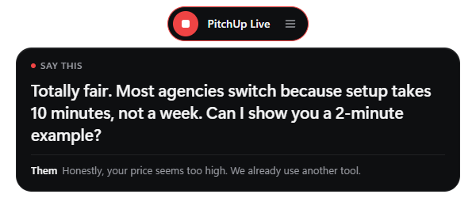
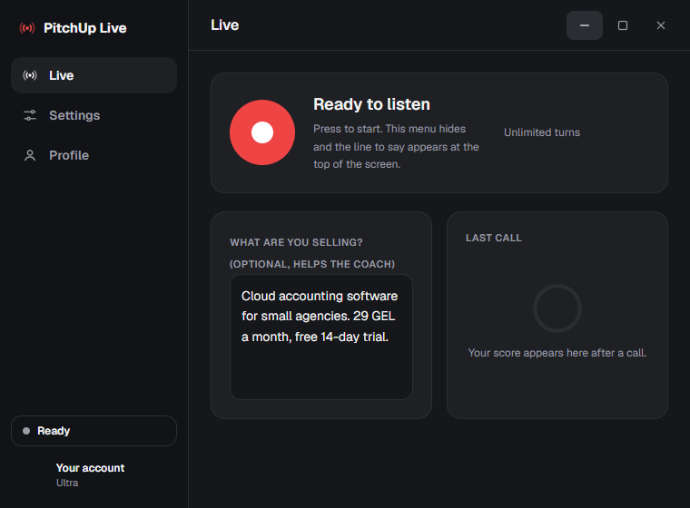

Version 1.1.0 for Windows and Mac
Know what to say, live, on every call.
PitchUp Live sits at the top of your screen, listens to your sales call and shows you the next sentence to say. When the call ends, you get a score.
Windows 10 and 11, 64-bit. The download is the newest version and installs in seconds. The Store version updates by itself.
Mac: macOS 13 or newer. The button is for Apple Silicon (M1 and later); get the Intel Mac version here. The first time you open it, macOS says it is from an unidentified developer: open System Settings → Privacy & Security and click Open Anyway.

Control panel

New in 1.0.4
One-click recording
A slim pill at the top of your screen. Press the red button and it starts listening, with a call timer.
A score for every call
Stop recording and you get a score out of 100, your skills, what went well and a better way to say your weakest line.
Faster coach
The next line shows up in its own bubble faster than before. Pick your screen outline colour in Settings.
Install
- Download the installer above and open it.
- If Windows shows “Windows protected your PC”, click More info, then Run anyway.
- Sign in with your PitchUp account and press the red button on your next call.